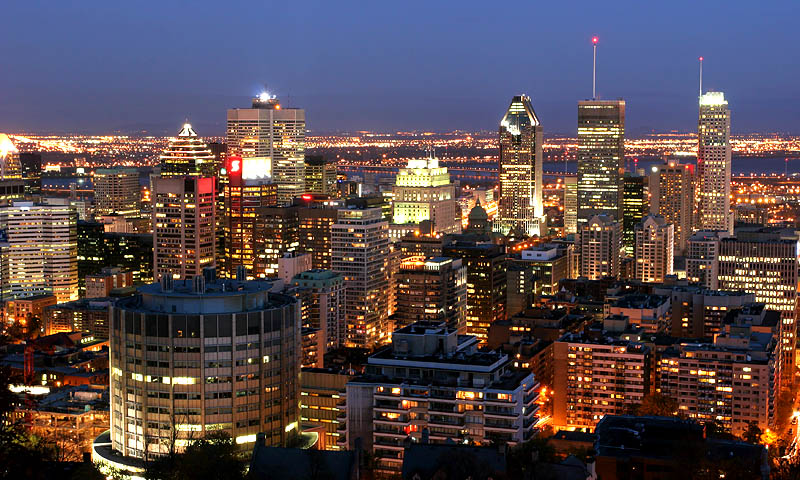
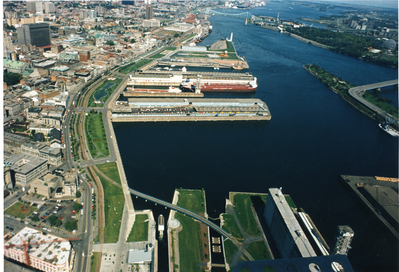
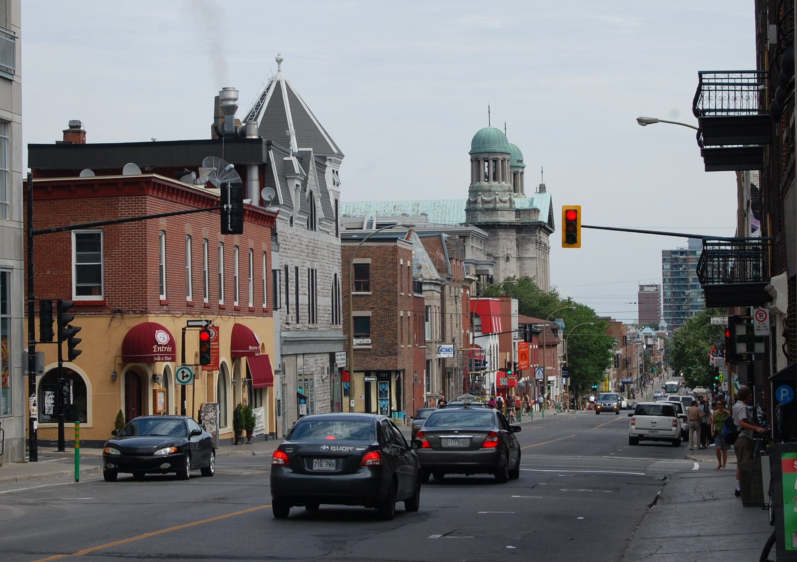
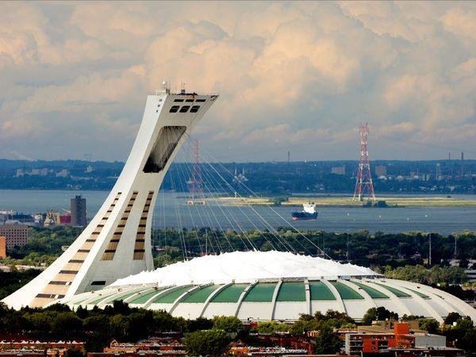

Neighborhoods
1. Downtown |
| 
This area contains the Montréal skyline most dramatic elements and includes most of the city large luxury and chain hotels, prominent museums, corporate headquarters, main transportation hubs, and department stores.Within this neighborhood is the area called the Golden Square Mile an Anglophone district once characterized by dozens of mansions erected by the wealthy Scottish and English merchants and industrialists who dominated the city political life well into the 20th century. Many of those stately homes were torn down when skyscrapers began to rise here after World War II, but some remain.
|
2. Vieux-montreal & Vieux-port |
| 
The city was born here in 1642, by the river at Pointe-a-Calliére, the museum of archaeology and history. Today, especially in summer, many people converge around Place Jacques-Cartier, where cafe tables line narrow terraces. This is where street performers, strolling locals, and tourists congregate.The neighborhood is larger than it might seem at first. It bounded on the north by rue St-Antoine, and its southern boundary is the Vieux-Port (Old Port), now dominated by a well-used waterfront promenade that provides welcome breathing room for cyclists, in-line skaters, and picnickers. To the east, Vieux-Montréal is bordered by rue Berri, and to the west, by rue McGill. |
3. Plateau Mont-Royal & Mile End |
| 
The Plateau is where many Montréalers feel most at homeaway from downtown chattering pace and the more touristed Vieux-Montréal. It where many locals dine, shop, play, and live.Bounded roughly by rue Sherbrooke to the south, boulevard St-Joseph to the north, avenue Papineau to the east, and rue St-Urbain to the west, the Plateau has a vibrant ethnic atmosphere that fluctuates and shifts with each new immigration surge.Many warehouses and former tenements in the Plateau have been converted to house this panoply of shops, bars, and high- and low-cost eateries. |
4. Parc du mont-royal |

Not many cities have a mountain at their core. Montréal is named for this small outcropits Royal Mountain. The park here is a soothing urban pleasure. With trails for hiking and cross-country skiing, it well used by Montréalers, who refer to it simply and affectionately as the Mountain. Buses travel through the park, and if you are in moderately good shape you can walk to the top in 1 to 3 hours from downtown, depending on the route.On its northern slope are two cemeteries, one that used to be Anglophone and Protestant, the other Francophone and Catholic reminders of the city historic linguistic and religious
division. |
5. Olympic Park |
| 
A 20-minute drive east of downtown on rue Sherbrooke is Olympic Park,named for Stade Olympique (Olympic Stadium), the stadium Montréal built for the 1976 Olympic Games. Four other attractions here make up the newly branded Espace Pour la Vie (Space for Life): the city lovely Jardin Botanique (Botanical Garden) and three venues of special interest to children: Biodome de Montréal, Insectarium de Montréal, and the Rio Tinto Alcan Planétarium.
|